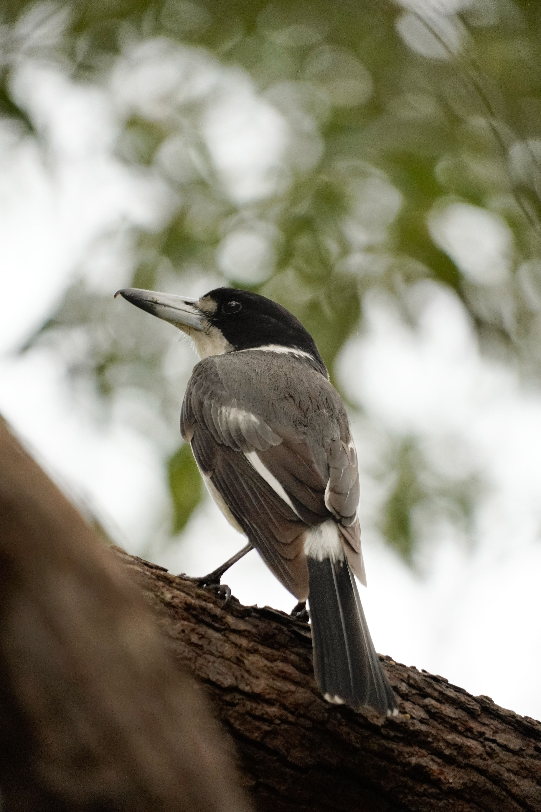

The Grey Butcherbird is a stocky Australian songbird with a strong hooked bill, grey back, black head and white markings. It occurs in a wide range of habitats, including woodland, farmland, parks and suburban gardens. Grey Butcherbirds are active hunters and search from exposed perches for insects, small reptiles and other prey, which they may carry back to a favourite perch. They are also accomplished singers and can produce a surprisingly varied collection of whistles, notes and melodic phrases. Pairs are territorial and often remain in the same area for long periods.